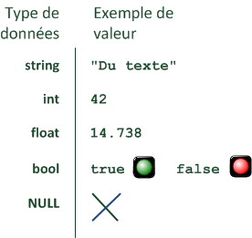
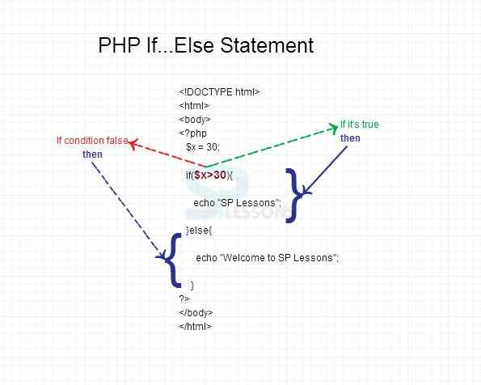
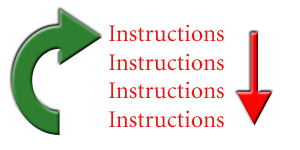
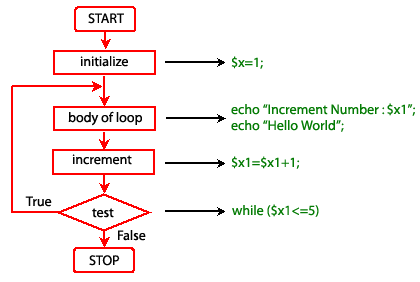

Qu'est-ce qu'une variable ?
Rien qu'avec leur nom, vous devez vous dire que c'est quelque chose qui change tout le temps. En effet, le propre d'une variable c'est de pouvoir varier (belle lapalissade, n'est-ce pas ? ;-)). Mais qu'est-ce que c'est concrètement ?
Une variable, c'est une petite information stockée en mémoire temporairement.
Elle n'a pas une grande durée de vie. En PHP, la variable (l'information) existe tant que la page est en cours de génération.
Dès que la page PHP est générée, toutes les variables sont supprimées de la mémoire car elles ne servent plus à rien.
Ce n'est donc pas un fichier qui reste stocké sur le disque dur mais une petite information temporaire
présente en mémoire vive.
C'est à vous de créer des variables. Vous en créez quand vous en avez besoin pour retenir des informations.
Un nom et une valeur
Une variable est toujours constituée de deux éléments :
son nom : pour pouvoir la reconnaître, vous devez donner un nom à votre variable. Par exempleage_du_visiteur;
sa valeur : c'est l'information qu'elle contient, et qui peut changer. Par exemple : 17.
Ici, je vous ai donné l'exemple d'une variable appeléeage_du_visiteurqui a pour valeur 17.
On peut modifier quand on veut la valeur de cette variable, faire des opérations dessus, etc. Et quand on en a besoin, on l'appelle (par son nom), et elle nous dit gentiment la valeur qu'elle contient.
Par exemple, on peut imaginer l'échange suivant :
« Hep ! Toi, la variableage_du_visiteur, que contiens-tu ? »
« 17 »
« Merci ! »
Vous allez voir que ces petites bébêtes, même si elles peuvent vous sembler encore un peu floues, seront vraiment indispensables pour votre site en PHP.
Par exemple, vous pourrez retenir temporairement le nom du visiteur. Dans une variablenom_du_visiteur, vous stockerez son pseudo, mettons « M@teo21 ». Dès que
vous en aurez besoin vous pourrez l'utiliser, notamment pour afficher un message de bienvenue personnalisé : « Salut M@teo21 ! Bienvenue sur mon site ! ».
Il est de bon ton de ne coder qu'en anglais : en effet, je ne vous le répèterai jamais assez, mais le code que vous écrivez pourrait être relu / repris par n'importe qui, et il est possible que le (la) développeur(se) soit non francophone.
Ainsi, pour les noms de vos variables, prenez soin de ne les écrire qu'en anglais.
Les différents types de variables
Les variables sont capables de stocker différents types d'informations. On parle de types de données. Voici les principaux types à connaître.
Les chaînes de caractères (string) : les chaînes de caractères sont le nom informatique qu'on donne au texte. Tout texte est appelé chaîne de caractères. En PHP,
ce type de données a un nom :string. On peut stocker des textes courts comme très longs au besoin.
Exemple :"Je suis un texte". Une chaîne de caractères est habituellement écrite entre guillemets ou entre apostrophes (on parle de guillemets simples) :'Je suis un texte'. Les deux fonctionnent mais il y a une petite différence que l'on va découvrir plus loin.
Les nombres entiers (int) : ce sont les nombres du type 1, 2, 3, 4, etc. On compte aussi parmi eux les entiers relatifs : -1, -2, -3…
Exemple :42.
Les nombres décimaux (float) : ce sont les nombres à virgule, comme 14,738. On peut stocker de nombreux chiffres après la virgule, ce qui devrait convenir pour la plupart des usages que vous en ferez. Attention, les nombres doivent être écrits avec un point au lieu de la virgule (c'est la notation anglaise).
Exemple :14.738.
Les booléens (bool) : c'est un type très important qui permet de stocker soit vrai soit faux.
Cela permet de retenir si une information est vraie ou fausse. On les utilise très fréquemment. On écrittruepour vrai, etfalsepour faux.
Exemple :true.
Rien (NULL) : aussi bizarre que cela puisse paraître, on a parfois besoin de dire qu'une variable ne contient rien. Rien du tout. On indique donc qu'elle vautNULL. Ce n'est pas vraiment un type de données, mais plutôt l'absence de type.

La structure de base : if… else
Une condition peut être écrite en PHP sous différentes formes. On parle de structures conditionnelles.
Celle que je vais vous apprendre à utiliser maintenant est la principale à connaître. Nous en verrons d'autres un peu plus loin.
Pour étudier la structureif… else, nous allons suivre le plan qui suit.
Les symboles à connaître : il va d'abord falloir retenir quelques symboles qui
permettent de faire des comparaisons. Soyez attentifs car ils vous seront utiles pour les conditions.
La structure if… else : c'est le gros morceau. Là vous allez voir comment fonctionne une
condition avecif… else. Inutile de vous dire qu'il est indispensable de bien comprendre cela.
Des conditions multiples : on compliquera un peu nos conditions.
Vous allez voir en effet qu'on peut utiliser plusieurs conditions à la fois.
Le cas des booléens : nous verrons ensuite qu'il existe une façon
particulière d'utiliser les conditions quand on travaille sur des booléens. Si vous ne savez pas ce que sont les booléens,
revoyez le chapitre sur les variables.
L'astuce bonus : parce qu'il y a toujours un bonus pour
récompenser ceux qui ont bien suivi jusqu'au bout !

Qu'est-ce qu'une boucle ? C'est une structure qui fonctionne sur le même principe que les conditions (if… else). D'ailleurs, vous allez voir qu'il y a beaucoup de similitudes avec le chapitre sur les conditions.
Concrètement, une boucle permet de répéter des instructions plusieurs fois. En clair, c'est un gain de temps, c'est très pratique, et bien souvent indispensable.
On peut si vous voulez présenter le principe dans le schéma suivant.
Voilà ce qui se passe dans une boucle :

comme d'habitude, les instructions sont d'abord exécutées dans l'ordre, de haut en bas (flèche rouge) ;
à la fin des instructions, on retourne à la première (flèche verte) ;
on recommence à lire les instructions dans l'ordre (flèche rouge) ;
et on retourne à la première (flèche verte) ;
etc., etc.
Le seul hic dans ce schéma, c'est que ça ne s'arrête jamais ! Les instructions seraient réexécutées à l'infini !
C'est pour cela que, quel que soit le type de boucle (whileoufor), il faut indiquer une condition. Tant que la condition est remplie, les instructions sont réexécutées. Dès que la condition n'est plus remplie, on sort enfin de la boucle (ouf !).
Voici comment faire avec une boucle simple :while.

whilepeut se traduire par « tant que ». Ici, on demande à PHP : TANT QUE$continuer_boucleest vrai, exécuter ces instructions.
Les instructions qui sont répétées en boucle se trouvent entre les accolades{et}. Mais bon là je ne vous apprends rien, vous commencez à avoir l'habitude de voir des accolades de partout. ;-)
Ce n'est pas beaucoup plus compliqué que ça, il n'y a guère plus de choses à savoir. Cependant, je vais quand même vous montrer un ou deux exemples d'utilisation de boucles, pour que vous voyiez à quoi ça peut servir…
Pour notre premier exemple, on va supposer que vous avez été punis et que vous devez recopier 100 fois « Je ne dois pas regarder les mouches voler quand j'apprends le PHP. ».
Avant, il fallait prendre son mal en patience et ça prenait des heuuuures… Maintenant, avec PHP, on va faire ça en un clin d'œil !
Regardez ce code :

Ce qui affiche... un grand nombre de lignes :

Une boucle plus complexe : for
Mais non, n'ayez pas peur voyons.
Il ne vous arrivera rien de mal : ici le mot « complexe » ne veut pas dire « compliqué ».
forest un autre type de boucle, dans une forme un peu plus condensée et plus commode à écrire, ce qui fait queforest assez fréquemment utilisé.
Cependant, sachez queforetwhiledonnent le même résultat et servent à la même chose : répéter des instructions en boucle. L'une peut paraître plus adaptée que l'autre dans certains cas, cela dépend aussi des goûts.
Alors, comment ça marche unfor ? Ça ressemble beaucoup auwhile, mais c'est la première ligne qui est un peu particulière. Pour que vous voyiez bien la différence avec le while, je reprends exactement l'exemple précédent, mais cette fois avec unfor :

Que de choses dans une même ligne !
Bon, vous vous en doutez, je ne vais vous expliquer que la ligne dufor, le reste n'ayant pas changé.
Après le motfor, il y a des parenthèses qui contiennent trois éléments, séparés par des points-virgules;.
Décrivons chacun de ces éléments.
Le premier sert à l'initialisation. C'est la valeur que l'on donne au départ à la variable (ici, elle vaut 1).
Le second, c'est la condition. Comme pour lewhile, tant que la condition est remplie, la boucle est réexécutée. Dès que la condition ne l'est plus, on en sort.
Enfin, le troisième c'est l'incrémentation, qui vous permet d'ajouter 1 à la variable à chaque tour de boucle.
Les deux derniers codes donnent donc exactement le même résultat. Leforfait la même chose que lewhile, mais rassemble sur une seule ligne tout ce qu'il faut savoir sur le fonctionnement de la boucle.